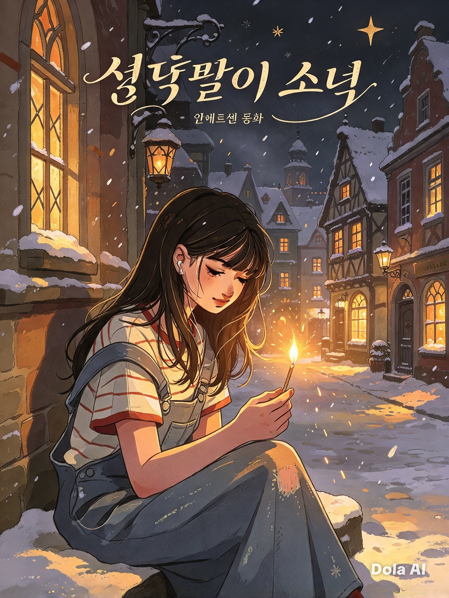
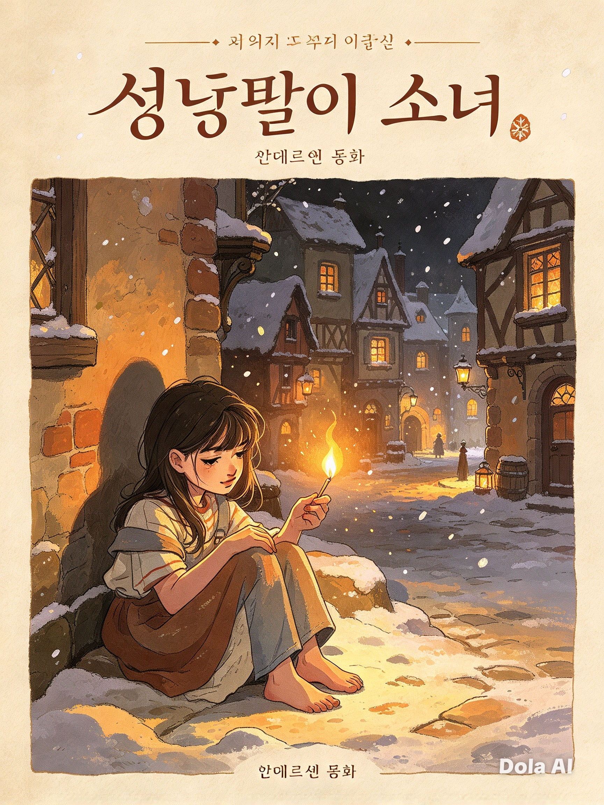
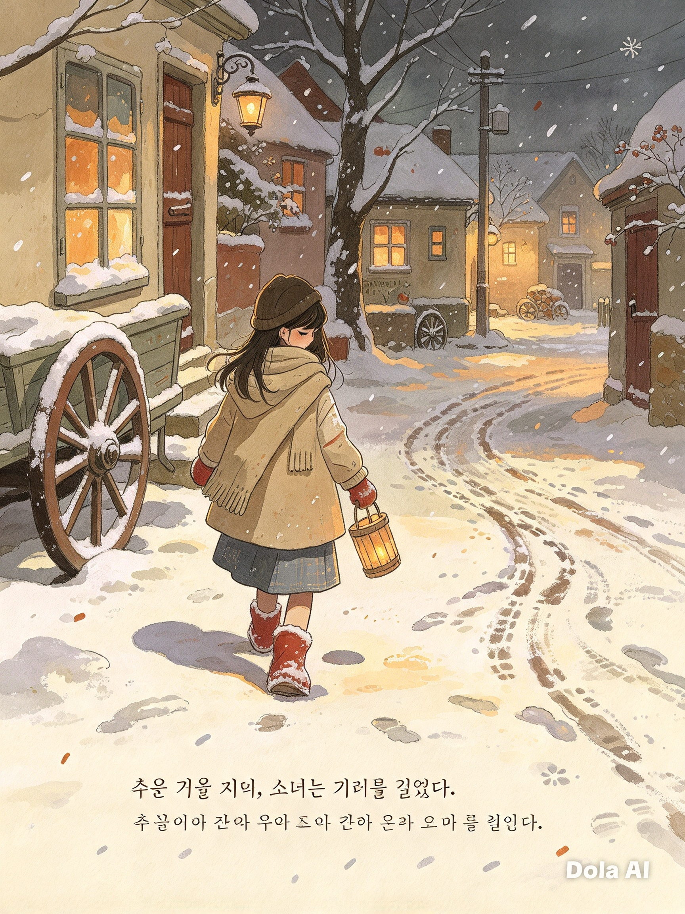
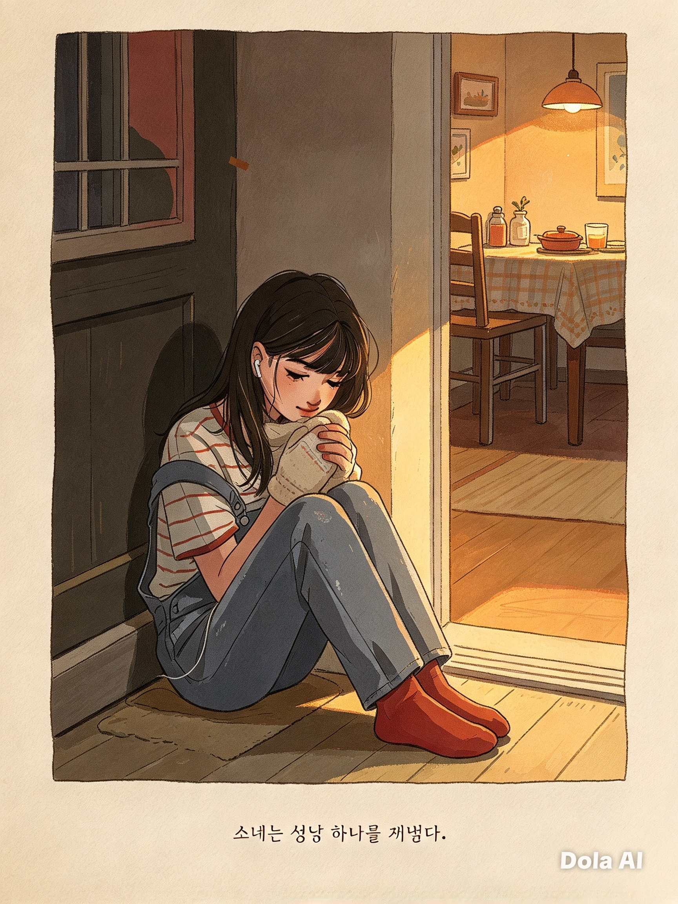
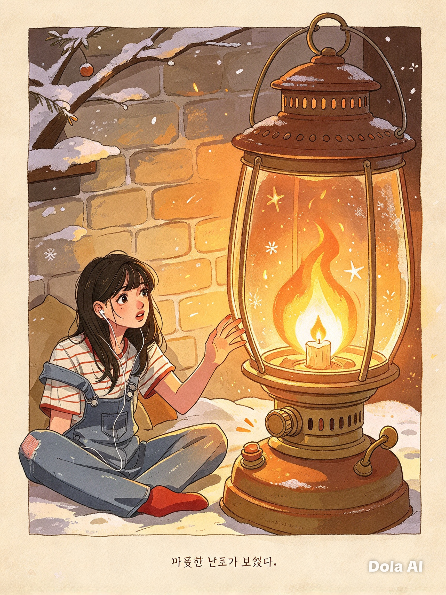
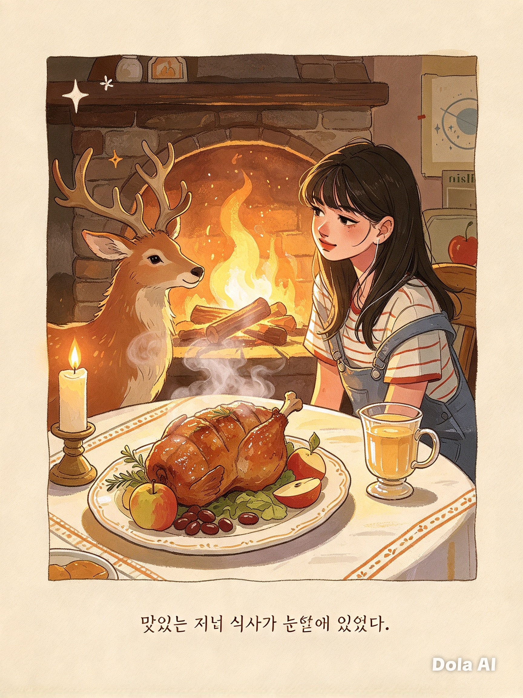
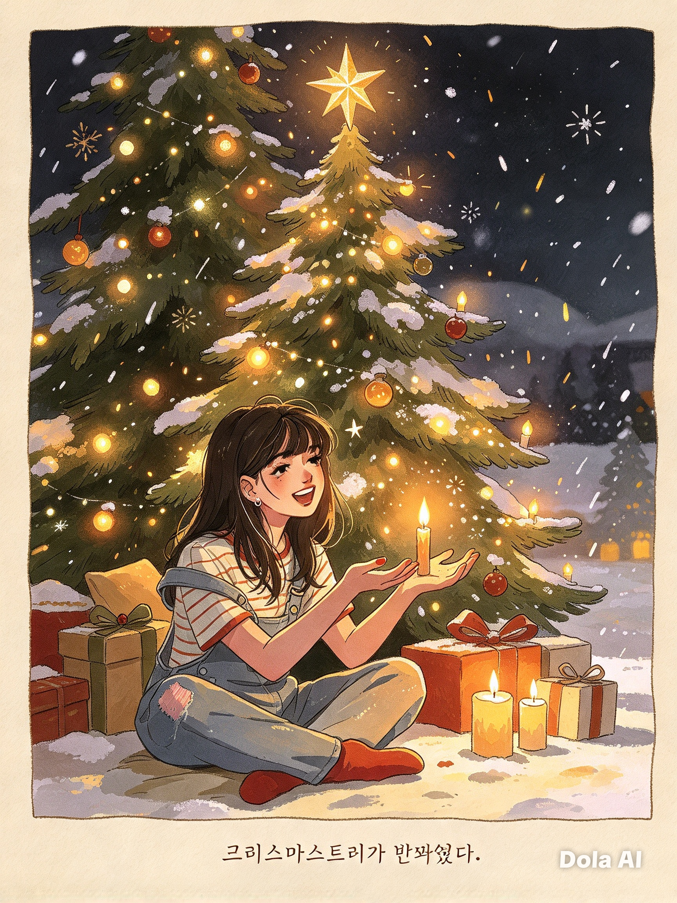

안데르센 동화
1

추운 겨울 저녁이었습니다. 눈이 소복소복 내리고, 세상은 온통 하얗게 덮였습니다.
한 소녀가 길을 걸어가고 있었습니다. 발은 맨발이었고, 입고 있는 옷은 낡고 얇아 추위를 막아주지 못했습니다. 손에는 성냥갑을 들고 있었지만, 하루 종일 단 한 사람도 성냥을 사주지 않았습니다.
거리에는 따뜻한 불빛이 새어나오고, 맛있는 음식 냄새가 풍겨왔습니다. 하지만 소녀에게는 그런 따뜻한 곳이 없었습니다.
2

손이 꽁꽁 얼어붙을 것 같았습니다. 소녀는 참을 수 없어 성냥 하나를 꺼내 벽에 그었습니다.
치지직! 반짝이는 불꽃이 피어났습니다. 따뜻하고 환한 불빛 속에서 소녀는 커다란 쇠 난로를 보았습니다.
얼마나 따뜻할까요! 소녀는 발을 내밀어 보았습니다. 하지만 그 순간 성냥불이 꺼지고, 난로는 사라져 버렸습니다.
3

두 번째 성냥을 그었습니다. 불빛이 벽을 투명하게 만들었고, 집 안이 훤히 보였습니다.
식탁 위에는 맛있는 음식이 가득 차려져 있었습니다. 김이 모락모락 나는 거위 구이, 알록달록한 과일들… 정말 맛있어 보였습니다.
소녀는 배가 너무 고팠습니다. 하지만 성냥이 꺼지자 모든 것은 사라지고, 차가운 벽만 만질 수 있었습니다.
4

세 번째 성냥을 켰습니다. 이번에는 아름다운 크리스마스트리가 눈앞에 나타났습니다.
반짝이는 촛불들이 가지를 밝히고, 예쁜 장식들이 눈부시게 빛나고 있었습니다. 소녀가 손을 내밀자 불빛들은 점점 높이 올라가 하늘의 별이 되었습니다.
별 하나가 길게 꼬리를 끌며 떨어졌습니다. "누군가 이 세상을 떠나는 거예요." 할머니가 예전에 말해주신 이야기가 떠올랐습니다.
5

네 번째 성냥을 그었습니다. 환한 빛 속에서 사랑하는 할머니가 나타나셨습니다!
할머니는 세상에서 가장 따뜻하게 소녀를 바라보고 계셨습니다. 소녀는 소리쳤습니다.
"할머니! 저를 데려가 주세요! 성냥이 꺼지면 할머니도 사라지시겠죠? 다른 것들처럼…!"
소녀는 남은 성냥을 모두 꺼내 한꺼번에 켰습니다. 주변이 대낮처럼 환하게 밝혀졌습니다.
6 · 마지막

할머니는 소녀를 품에 꼭 안아 주었습니다. 두 사람은 함께 하늘 높이 날아올랐습니다.
거기에는 추위도 없고, 배고픔도 없고, 슬픔도 없었습니다. 영원히 따뜻하고 행복한 곳이었습니다.
다음 날 아침, 사람들은 모퉁이에 앉아 있는 소녀를 발견했습니다. 뺨은 붉고 입가에는 미소를 지은 채 잠든 듯했습니다.
소녀는 할머니와 함께 따뜻한 하늘나라에 있었을 것입니다. 영원히 행복하게.